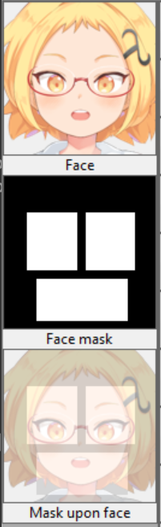

face_mask_image_file_nameThis is the name of the file containing binary masks of movable facial organs of the character. It is probably the best to see an example.
A "face mask image" conforms to the following specification.
We recommend creating three rectangles.
The rectangles for the eyes and the eyebrows should extend above the eyes to some extent because the eyebrows can move upward.
Once you have specified the face mask image with the "Change..." button, a crop of the face area will show up on the left side of the window. If the character image has also been specified, an image of the face mask laid over the character's face will also show up. Use this image to check whether the masks are covering everything.
